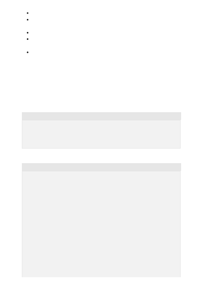

Aim for at least ~500 examples.
Ensure that the prompt + completion doesn't exceed 2048 tokens, including the
separator.
Ensure the examples are of high quality and follow the same desired format.
Ensure that the dataset used for fine-tuning is similar in structure and type of task
as what the model will be used for.
Using Lower learning rate and only 1-2 epochs tends to work better for these use
cases.
This is a generative use case so you would want to ensure that the samples you provide
are of the highest quality, as the fine-tuned model will try to imitate the style (and
mistakes) of the given examples. A good starting point is around 500 examples. A
sample dataset might look like this:
JSON
For example:
JSON
Case study: Write an engaging ad based on a Wikipedia article
{
"prompt":"<Product Name>\n<Wikipedia description>\n\n###\n\n",
"completion":" <engaging ad> END"
}
{
"prompt":"Samsung Galaxy Feel\nThe Samsung Galaxy Feel is an Android
smartphone developed by Samsung Electronics exclusively for the Japanese
market. The phone was released in June 2017 and was sold by NTT Docomo. It
runs on Android 7.0 (Nougat), has a 4.7 inch display, and a 3000 mAh
battery.\nSoftware\nSamsung Galaxy Feel runs on Android 7.0 (Nougat), but
can be later updated to Android 8.0 (Oreo).\nHardware\nSamsung Galaxy Feel
has a 4.7 inch Super AMOLED HD display, 16 MP back facing and 5 MP front
facing cameras. It has a 3000 mAh battery, a 1.6 GHz Octa-Core ARM Cortex-
A53 CPU, and an ARM Mali-T830 MP1 700 MHz GPU. It comes with 32GB of
internal storage, expandable to 256GB via microSD. Aside from its software
and hardware specifications, Samsung also introduced a unique a hole in the
phone's shell to accommodate the Japanese perceived penchant for
personalizing their mobile phones. The Galaxy Feel's battery was also touted
as a major selling point since the market favors handsets with longer
battery life. The device is also waterproof and supports 1seg digital
broadcasts using an antenna that is sold separately.\n\n###\n\n",
"completion":"Looking for a smartphone that can do it all? Look no
further than Samsung Galaxy Feel! With a slim and sleek design, our latest
smartphone features high-quality picture and video capabilities, as well as